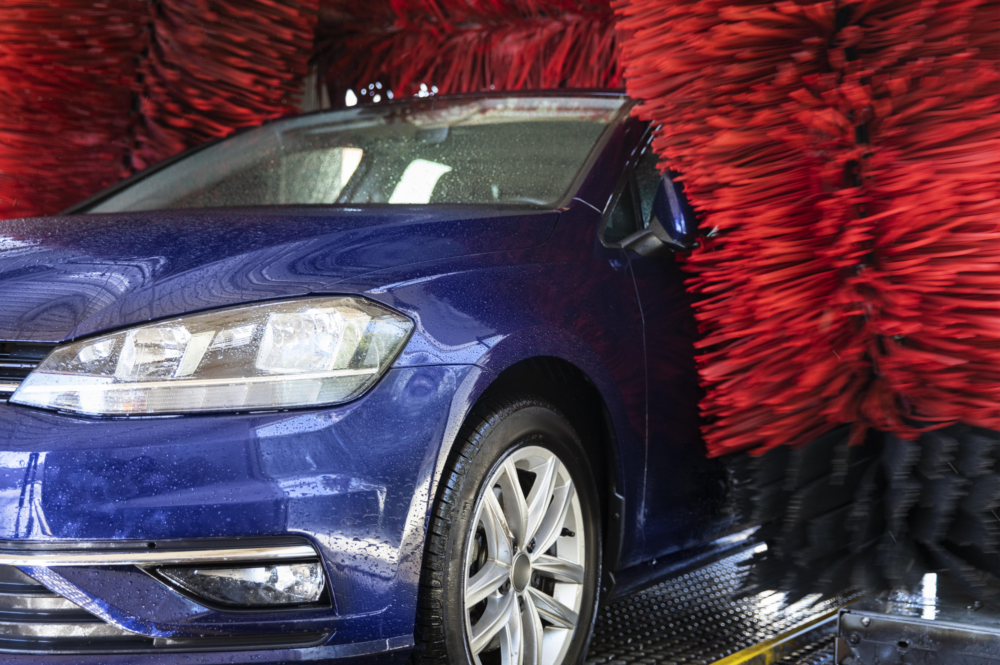

Most car owners know the basics of vehicle maintenance — oil changes, tire rotations, fluid checks. But there's one form of maintenance that often gets overlooked: keeping your car clean while using the most optimal methods. Regular washing prevents foggy headlights, paint erosion, and a dirty appearance.
For me, the automatic car wash holds a certain nostalgia. Growing up, a trip through the tunnel felt like a mini-adventure. The giant brushes sweeping across the windows, the familiar fresh and soapy smell that crept inside the car; the satisfying reveal of a shiny car on the other side. I even felt clean afterwards! Automatic car washes are fast, affordable, and convenient. I would use them if I weren't scared — because they ruin your car! There is a real art to maintaining a vehicle's finish — and the drive-through wash you've been using isn't it.
I live in Florida, where intense UV exposure, heat, and humidity make regular car washing an absolute must. You will face the consequences if you don't wash and protect your car — low resale value, and you'll be caught riding dirty.
Here are 4 reasons your should avoid automatic car washes.
Modern vehicles are loaded with technology — proximity sensors, parking cameras, lane-assist systems, and more. The problem? Car wash technology hasn't kept pace with automotive innovation.
High-pressure water jets can misalign or damage exterior cameras and sensors, triggering costly error codes and leaving them exposed to further harm. When I purchased my used vehicle and pulled up the CarFax report, I noticed multiple sensor replacements on a car that was less than three years old. Looking closely at the paint, I also spotted swirl marks — a classic sign of repeated automatic car wash use. My conclusion: the high-powered car wash jets were likely the cause of the sensor issues. Most good detailers use a soft tip when rinsing their clients' cars, like a steady stream waterhose. A gentle approach to prevent any damage to the paint and above all for most people, the sensors of the vehicle.
Getting your car onto the track of an automatic car wash requires your wheels to be guided onto a metal conveyor system. For many vehicles — especially those with lower profiles, custom rims, or wider tires — this process poses a real risk of scraping, scuffing, or misaligning your wheels.
Wheel and tire damage from car washes is more common than most drivers realize, and it's not always obvious until you notice a scuff on your rim or an unusual pull in your steering. Professional detailers wash your wheels by hand, giving them the careful, individualized attention they need.
Many automatic car washes recycle their water to cut costs and reduce waste—which sounds eco-friendly, but comes with a serious downside. Recycled wash water accumulates dirt, debris, and contaminants from every car that came before yours. Unless that water is thoroughly treated, it's essentially spreading other cars' nastiness back onto your vehicle.
Even in facilities that use fresh water, hard water is a major problem. Hard water contains high concentrations of calcium and magnesium minerals. When hard water dries on your car's surface, it leaves behind white, chalky mineral deposits—commonly known as water spots. These spots are notoriously difficult to remove and, if left untreated, can etch into your clear coat, causing permanent damage that only a professional detailing service can correct.
You wouldn't share a toothbrush would you? What if I gave you a toothbrush 50 people used before you, would you still use the brush then? Probably not, it's gross. If you say yes in any form, then you a little nasty.
The car wash is pretty much using the same brushes from 100+ cars before yours and without cleaning the brush beforehand or inbetween. All that grime, dirt and debris gets trapped in the brushes, leaving your paint vulernable. The swirl marks and micro-scratches left behind by automatic car washes don't just look bad—they compromise your car's clear coat — the protective layer that shields the paint from UV rays, oxidation, and corrosion. A damged clear coat causes peeling and dulling of your car's surface, therfore devaluing your car and making it vulnerable to the outside elements.
Wash your car yourself. Use a garden hose and pH neutral car wash soap at home to get the best bang for your buck, and a clean car. Washing by hand can get in areas your local car wash can't. An even better way of washing your car is implementing the two-bucket method, which involves using one bucket for soapy water and another for rinsing your wash mitt. This technique helps prevent dirt and grit from being reintroduced to your car's surface, reducing the risk of scratches and swirl marks. If you want to take it a step further, consider investing in a high-quality microfiber wash mitt and drying towel to minimize the chances of causing damage to your paint.
Mobile detailers like The Art of Detailing can provide a more thorough and gentle cleaning experience than a car wash. The Art of Detailing offers:
Open: Monday-Sunday
8:30am-5:30pm
3914 Circle Lake Drive, West Palm Beach, FL, 33417
© The Art of Detailing, All Right Reserved. Designed By HTML Codex